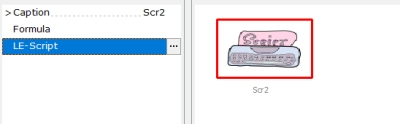
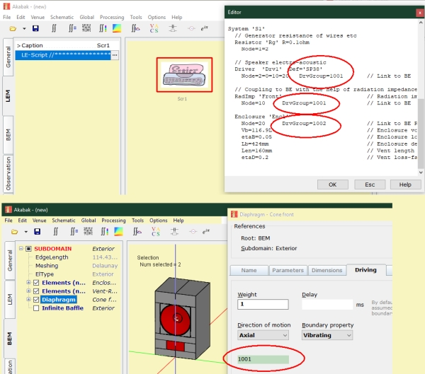

LE-Script
| Home | LE-Part | General |
 |
 |
LE-Script is a component, which implements a whole system of LE-networks. The specification of component parameters and of the wiring is in script form. The syntax is compatible to the LE-Script of ABEC, which was the predecessor of AKABAK.
Akabak 2.1
To a great extend also scripts of the legacy application Akabak 2.1 can be used. Currently there is no import feature. How to open one of the old files of Akabak 2.1? The old project files are made of two parts. At first comes the binary part, then comes text. Open an old akp-file in a text-editor, say Notepad. Scroll down to the textual part. Copy the text part and insert into parameter editor.
There are some components which are not supported, mainly because in the new AKABAK
the lumped element part and the radiation part are independent units and not mingled
as in the legacy Akabak. Following components are not supported:
Def_BassUnit, Def_Driving, Def_ListeningPoint, Def_Reflector, Radiator.
The legacy Akabak calculated only the Direct Sound plus some approximations for diffraction, reflection and radiation impedance.
The new AKABAK provides the Boundary Element method for the calculation of diffraction and reflection effects. Also the radiation impedance comes out way more exact. The new AKABAK has also the Direct Sound Mode, however without the approximations of the old Akabak.
Observations
As the LE-Script yields a lumped element network, we also want to observe its parameters such as voltages and currents. There is a special observation form, which allows to specify components by name and by node number. See chapter Network Inspection (Script).
Coupling to BEM-Part
Further we want to connect radiation components to the BEM-part. This is done by DrvGroup numbers. Any transducer and any RadImp which is connected to a component of the BEM-Part should have DrvGroup specified.

Which number we should use? The BEM-component is providing this number at its driving section. For example the component Diaphragm displays the DrvGroup number on page Driving. You can use copy and paste.